VEX Robotics Competition
High School Engineering Portfolio: 2019 - 2022
Mechanical Design
Autonomous Systems
C++ Programming
Team Collaboration
Overview
From 2019 to 2022, I was a dedicated member of Team 4610W in the VEX Robotics Competition. Working collaboratively with my teammates, I contributed to the design, build, and programming of competitive robots. This experience introduced me to rigorous engineering constraints, iterative design cycles, and the importance of teamwork in executing complex strategies.
VEX Tipping Point
Team 4610W | 2021 - 2022
The Challenge
Tipping Point was played on a 12'x12' field where alliances competed to score rings on mobile goals and elevate those goals onto balanced platforms. The game required a robot capable of high-reach manipulation, heavy lifting (moving mobile goals), and precise balance for the endgame.
Engineering Contributions
I worked with the team to develop a robot focused on a high-speed ring intake and a multi-stage lift system. My primary focus was the "backpack" mobile goal lift, which allowed us to grab heavy scoring objectives from the rear of the robot while simultaneously intaking rings at the front.
- Four-Bar Linkage: Assisted in the design of a custom linkage system to keep the mobile goals level during elevation to prevent rings from sliding off.
- Conveyor Intake: Iterated through several silicone intake designs to maximize friction and speed when collecting rings from the floor.
- Pneumatic Braking: Implemented pneumatic pistons to lock the lift in place during the balancing phase, conserving battery power and motor torque.
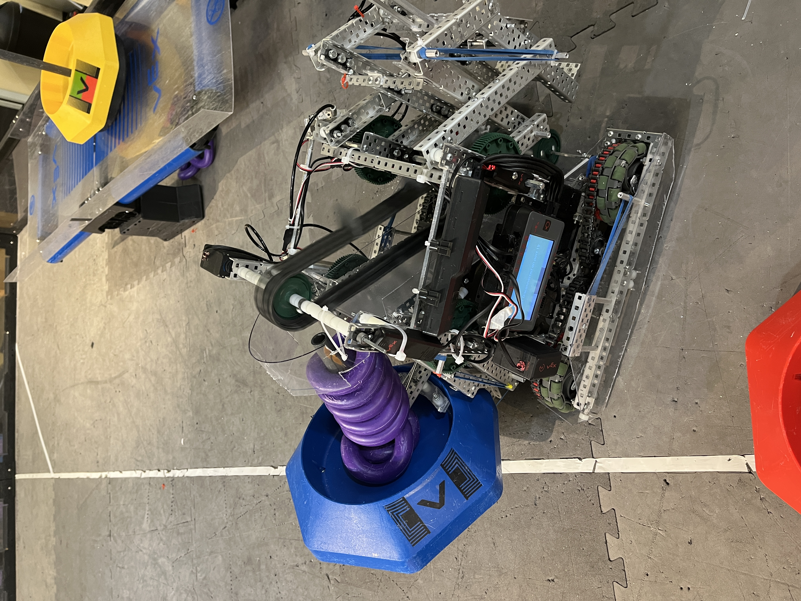
Mid-match performance: Scoring rings onto a blue alliance mobile goal.
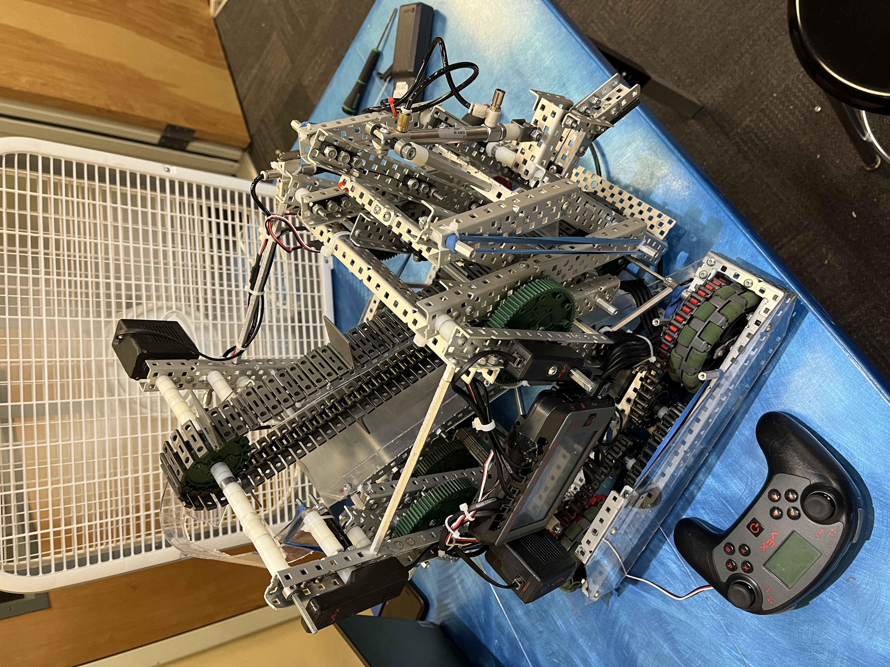
Late-stage prototype validation of the front intake geometry.
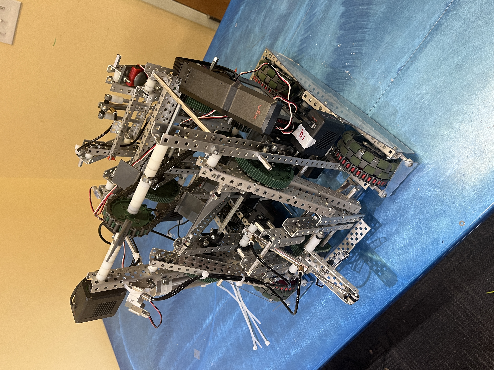
Early chassis prototyping: Testing intake width and clearance.
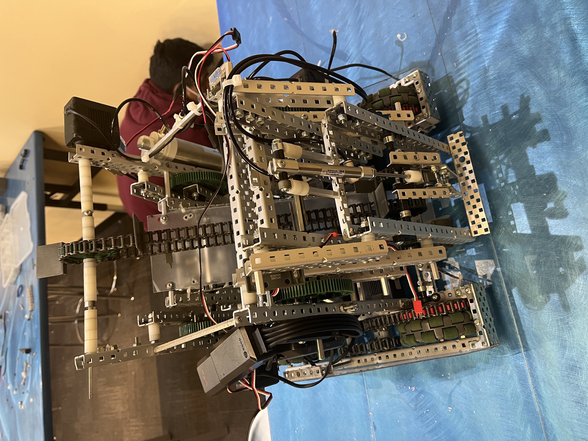
Rear mechanism testing for the mobile goal lift.
VEX AI Competition (VAIC)
Team 4610W | 2020 - 2021
The Challenge
The VEX AI Competition was a unique, fully autonomous challenge introduced during the "Change Up" season. Unlike standard matches with driver control, these robots had to operate entirely on their own for the full match duration, communicating with each other and reacting to a dynamic field using sensor data.
Engineering Contributions
I spearheaded the mechanical and pneumatic subsystems for our AI entry. The robot needed to be larger and more robust than standard competitors to house the additional computing power (Jetson Nano), GPS sensors, and FLIR thermal cameras.
- Pneumatic Intake Actuation: Designed a pneumatic system specifically to actuate the intake ball rollers. This allowed the intakes to deploy or retract on command to manage ball possession and interact with game objects effectively.
- Expansion Mechanism: The robot started within an 18" cube but deployed into a larger footprint. I engineered a spring-loaded unfolding mechanism that locked rigidly into place at the start of the match.
- Sensor Integration: Fabricated custom 3D-printed mounts for the VEX GPS strip and depth cameras, ensuring vibration-free mounting for accurate localization.
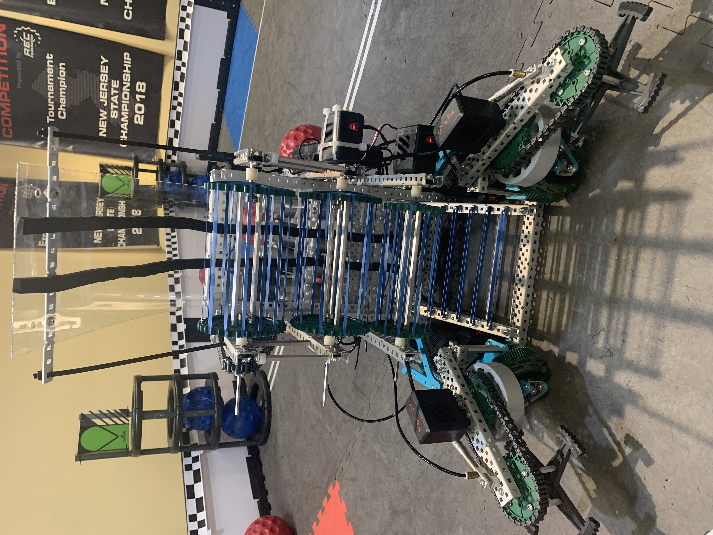
The fully deployed AI robot featuring dual intakes and top-mounted vision sensors.
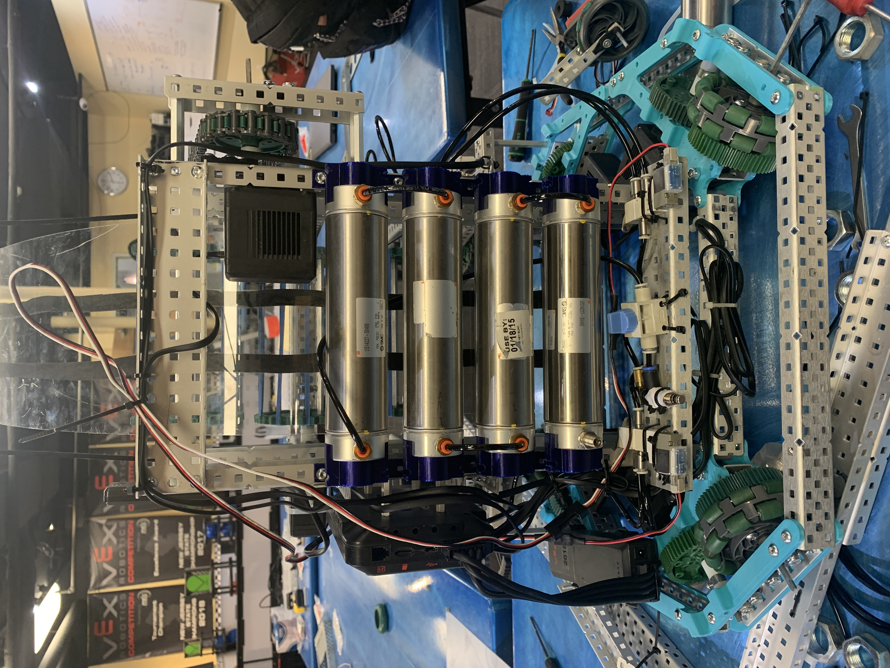
The integrated pneumatic system responsible for intake roller actuation.
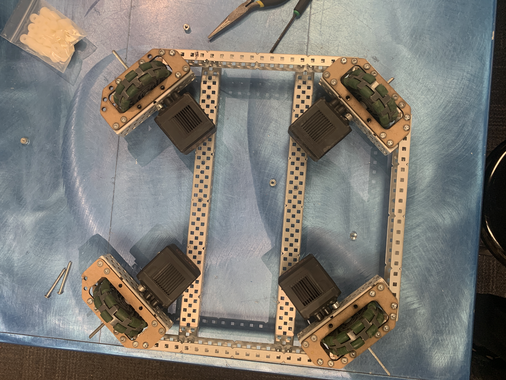
Initial drivetrain chassis testing for the larger 24" AI form factor.
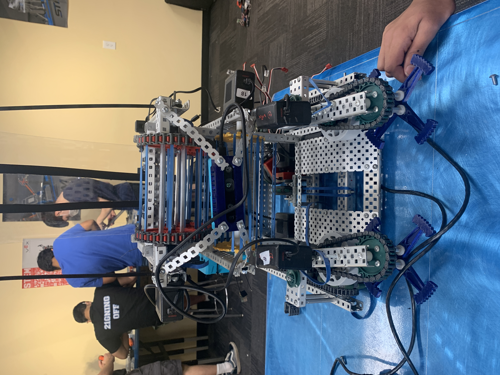
Early configuration testing sensor placement and intake geometry.
VEX Tower Takeover
Team 4610W | 2019 - 2020
The Challenge
Tower Takeover focused on stacking cubes in vertical towers. The engineering challenge was precision stacking; robots needed to intake cubes rapidly, hold a stack of up to 10 cubes, and deposit them gently without toppling the tower.
Engineering Solution: "LilMech"
My robot, nicknamed "LilMech," utilized a Mecanum drive system for holonomic movement (strafing). This allowed us to align with cube stacks without turning the entire robot chassis, significantly reducing cycle times.
- Holonomic Drivetrain: Implemented a 4-motor Mecanum drive, programmed with vector-based joystick control for omnidirectional movement.
- Deployable Tray: Designed a multi-stage folding tray that compacted the robot into the starting size limits (18"x18"x18") and unfolded to support a 4-foot vertical stack of cubes.
- Center of Mass Management: Carefully balanced the robot's wheelbase to prevent tipping when the heavy stack was fully extended forward.
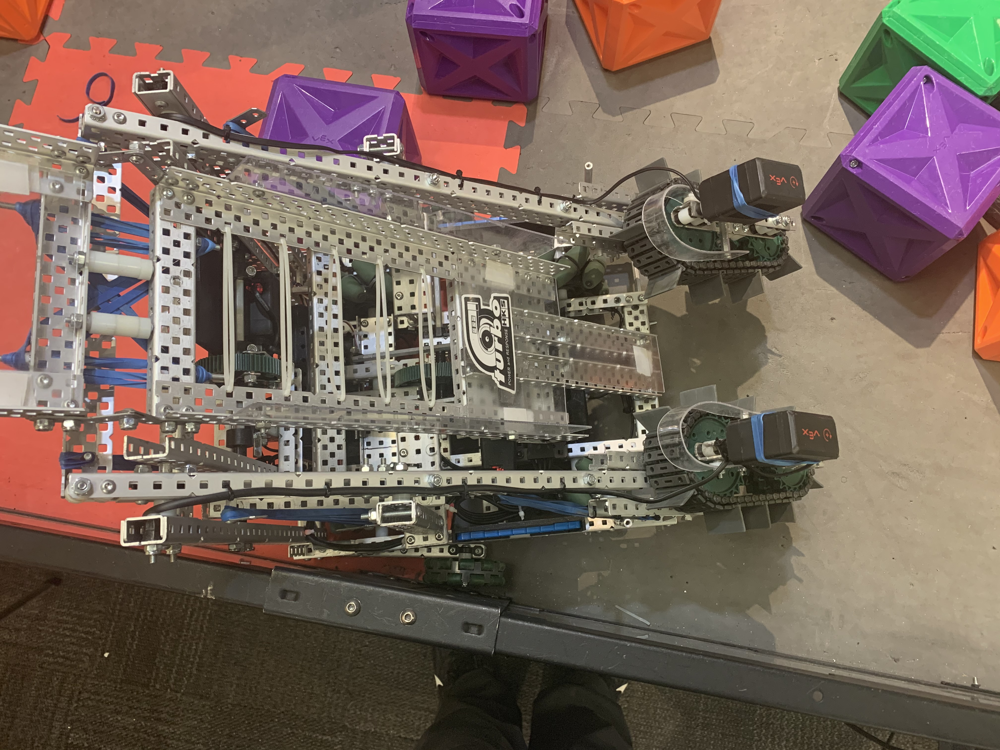
Front view highlighting the intake rollers and the tray's stacking alignment.
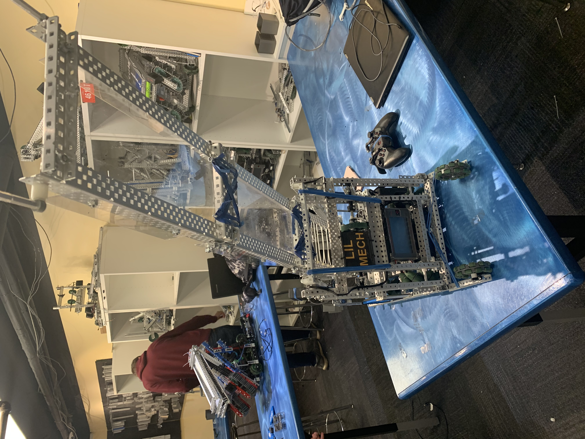
Rear view showing the deployed tray mechanism and custom 3D printed nameplate.
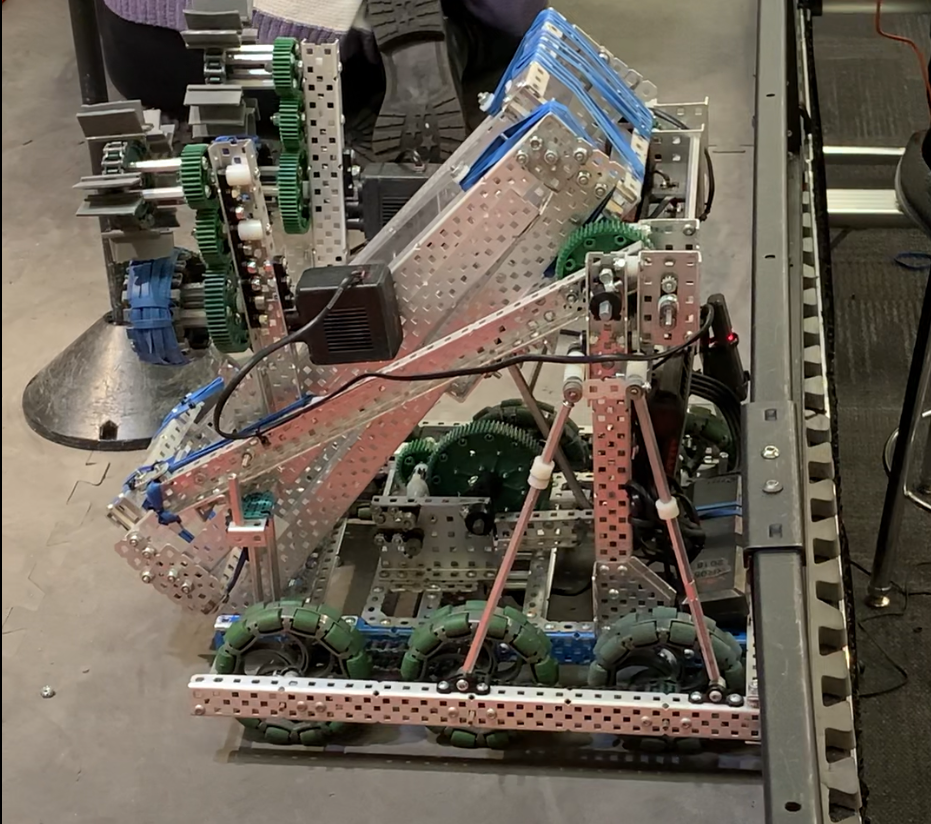
Early prototype demonstrating the compact, folded configuration required to fit within the 18-inch starting size limit.
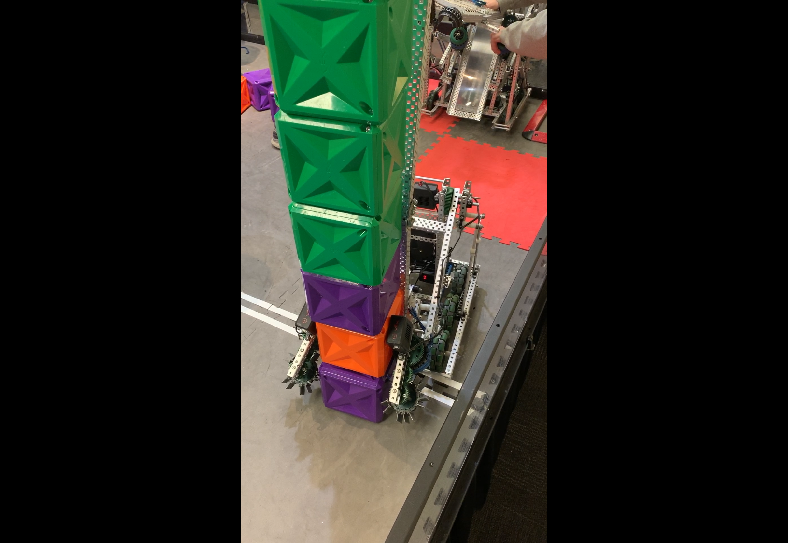
"LilMech" in action, precisely depositing a vertical stack of cubes during gameplay.